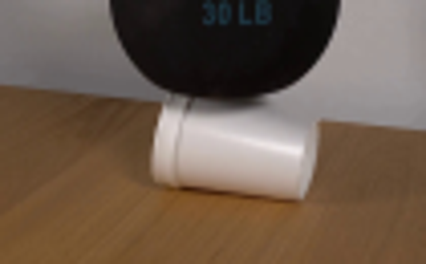
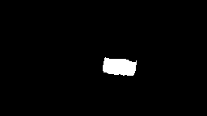
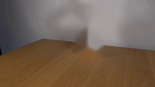
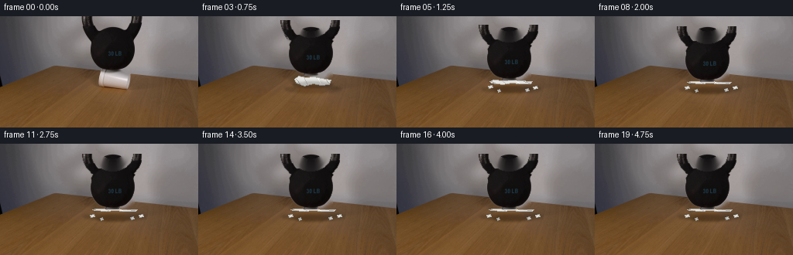
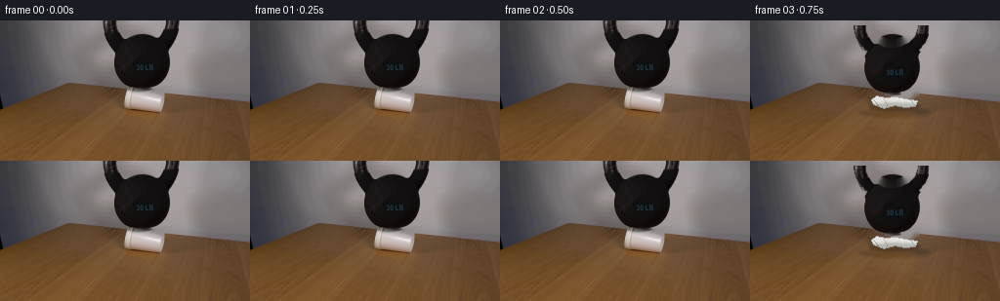

CODING AGENTS AS PIXEL WORLD MODELS
traex/GPT-5.6-Sol · 0192
点击播放 · 原生 RGB 像素
逐轮保存的候选
回放视频、检查图与代码变化。
每份候选均可单独播放。实际图片检查记录在下方工具轨迹中。
候选 01播放与检查图
点击播放 · 原生 RGB 像素

展开代码变化
--- 上一保存版本
+++ 本次保存版本
@@ -0,0 +1,143 @@
+from pathlib import Path
+import cv2
+import numpy as np
+from PIL import Image, ImageDraw
+import artifact_io
+
+CASE = Path(__file__).resolve().parent
+SRC = np.asarray(Image.open(CASE / 'first_frame.png').convert('RGB'))
+H, W = SRC.shape[:2]
+BGR = cv2.cvtColor(SRC, cv2.COLOR_RGB2BGR)
+GRAY = cv2.cvtColor(BGR, cv2.COLOR_BGR2GRAY)
+
+
+def grab_objects():
+ # Matte the black kettlebell from its known silhouette and appearance.
+ m = np.full((H, W), cv2.GC_BGD, np.uint8)
+ silhouette = np.zeros((H, W), np.uint8)
+ cv2.ellipse(silhouette, (147, 43), (32, 30), 0, 0, 360, 255, -1)
+ cv2.ellipse(silhouette, (145, -1), (39, 35), 0, 0, 360, 255, -1)
+ cv2.ellipse(silhouette, (145, -1), (26, 23), 0, 0, 360, 0, -1)
+ m[silhouette > 0] = cv2.GC_PR_FGD
+ m[(silhouette > 0) & (GRAY < 67)] = cv2.GC_FGD
+ bgd, fgd = np.zeros((1, 65)), np.zeros((1, 65))
+ cv2.grabCut(BGR, m, None, bgd, fgd, 6, cv2.GC_INIT_WITH_MASK)
+ kettle = np.where((m == 1) | (m == 3), 255, 0).astype(np.uint8)
+
+ # The cup is bright and occupies this compact polygon.
+ m = np.full((H, W), cv2.GC_BGD, np.uint8)
+ poly = np.array([[127, 67], [169, 72], [172, 78], [168, 95],
+ [136, 92], [130, 94], [124, 88], [126, 72]], np.int32)
+ cv2.fillPoly(m, [poly], cv2.GC_PR_FGD)
+ m[(m == cv2.GC_PR_FGD) & (GRAY > 180)] = cv2.GC_FGD
+ bgd[:] = 0; fgd[:] = 0
+ cv2.grabCut(BGR, m, None, bgd, fgd, 5, cv2.GC_INIT_WITH_MASK)
+ cup = np.where((m == 1) | (m == 3), 255, 0).astype(np.uint8)
+ return kettle, cup
+
+
+def make_clean_plate(kettle, cup):
+ # Inpaint only where the original objects stood. The cup area is later
+ # covered by debris; a softly reconstructed plate prevents stale pixels.
+ mask = cv2.bitwise_or(kettle, cup)
+ mask = cv2.dilate(mask, np.ones((7, 7), np.uint8))
+ plate = cv2.inpaint(BGR, mask, 7, cv2.INPAINT_TELEA)
+ return cv2.cvtColor(plate, cv2.COLOR_BGR2RGB)
+
+
+def alpha_sprite(mask, pad=2):
+ ys, xs = np.where(mask > 0)
+ x0, x1 = max(0, xs.min()-pad), min(W, xs.max()+pad+1)
+ y0, y1 = max(0, ys.min()-pad), min(H, ys.max()+pad+1)
+ rgb = SRC[y0:y1, x0:x1].copy()
+ a = cv2.GaussianBlur(mask[y0:y1, x0:x1], (3,3), .55)
+ return rgb, a, (x0, y0)
+
+
+def paste_rgba(dst, rgb, alpha, x, y):
+ sh, sw = alpha.shape
+ xa, ya = max(0, x), max(0, y)
+ xb, yb = min(W, x+sw), min(H, y+sh)
+ if xb <= xa or yb <= ya: return
+ sx, sy = xa-x, ya-y
+ a = alpha[sy:sy+yb-ya, sx:sx+xb-xa, None].astype(np.float32) / 255.
+ dst[ya:yb, xa:xb] = np.clip(rgb[sy:sy+yb-ya, sx:sx+xb-xa]*a +
+ dst[ya:yb, xa:xb]*(1-a), 0, 255).astype(np.uint8)
+
+
+def draw_shadow(frame, bbox, opacity=60, blur=7):
+ layer = np.zeros((H, W), np.uint8)
+ cv2.ellipse(layer, bbox[0], bbox[1], bbox[2], 0, 360, int(opacity), -1)
+ layer = cv2.GaussianBlur(layer, (blur|1, blur|1), 0)
+ a = layer[...,None].astype(np.float32)/255
+ frame[:] = (frame*(1-a)).astype(np.uint8)
+
+
+def cup_debris(frame, p):
+ """A compact, progressive styrofoam collapse beneath the weight."""
+ d = Image.fromarray(frame)
+ dr = ImageDraw.Draw(d, 'RGBA')
+ # broad contact shadow grows as the bell reaches the table
+ # Crumpled cup body: it flattens vertically and splays horizontally.
+ cy = 83 + 3*p
+ hh = max(1.8, 8.0*(1-p) + 1.3)
+ left, right = 127-8*p, 169+8*p
+ # jagged rear/fore edges imply buckled foam rather than a clean scaling
+ pts = [(left,cy-hh*.35),(left+5,cy-hh),(139,cy-hh*.70),
+ (149,cy-hh*.95),(159,cy-hh*.55),(right,cy-hh*.2),
+ (right-2,cy+hh*.65),(158,cy+hh*.85),(148,cy+hh*.55),
+ (137,cy+hh),(left+2,cy+hh*.45)]
+ dr.polygon(pts, fill=(229,228,224,255), outline=(171,169,164,220))
+ # compressed rim and characteristic cup folds
+ dr.line([(left+2,cy-hh*.45),(left+7,cy+hh*.55)], fill=(157,155,151,210), width=1)
+ dr.line([(136,cy-hh*.65),(141,cy+hh*.65)], fill=(185,183,178,190), width=1)
+ dr.line([(154,cy-hh*.6),(158,cy+hh*.55)], fill=(255,255,252,210), width=1)
+ dr.line([(164,cy-hh*.4),(right-3,cy+hh*.35)], fill=(151,150,147,180), width=1)
+ # small irregular broken chips emerge late, kept physically close.
+ if p > .45:
+ q=(p-.45)/.55
+ chips=[(123-7*q,89+3*q,5,2),(172+7*q,90+2*q,5,2),
+ (132-3*q,94+2*q,3,2),(164+4*q,94+q,4,2)]
+ for i,(x,y,ww,hh2) in enumerate(chips):
+ poly=[(x,y),(x+ww,y-1),(x+ww+1,y+hh2),(x+1,y+hh2+1)]
+ dr.polygon(poly, fill=(225+i*4,224+i*4,219+i*4,255), outline=(160,158,153,190))
+ frame[:] = np.asarray(d)
+
+
+def generate():
+ kettle_m, cup_m = grab_objects()
+ plate = make_clean_plate(kettle_m, cup_m)
+ krgb, ka, (kx, ky) = alpha_sprite(kettle_m)
+ crgb, ca, (cx, cy) = alpha_sprite(cup_m)
+ frames=[]
+ for i in range(20):
+ if i == 0:
+ frames.append(SRC.copy()); continue
+ # First 0.5 s visibly establishes the setup, followed by sudden yield.
+ # The heavy bell drops only about 13 px: a crushed cup, not a bouncing toy.
+ if i <= 2:
+ p=0.0
+ else:
+ u=min(1., (i-2)/7.)
+ p=1-(1-u)**3
+ settle = 0.0
+ if i >= 10:
+ settle = (0.7*np.exp(-(i-10)/3.2)*np.sin((i-10)*2.5))
+ dy = int(round(13.0*p + settle))
+ if p == 0:
+ fr=SRC.copy()
+ else:
+ fr=plate.copy()
+ # compressed foam's low shadow and the larger weight shadow
+ draw_shadow(fr, ((148,94), (35+int(6*p),5), 0), 44, 7)
+ cup_debris(fr,p)
+ draw_shadow(fr, ((148,83+dy), (25,4), 0), 54, 7)
+ paste_rgba(fr, krgb, ka, kx, ky+dy)
+ frames.append(fr)
+ arr=np.stack(frames).astype(np.uint8)
+ # Contract-critical exact source frame.
+ arr[0]=SRC
+ artifact_io.save(arr, CASE)
+
+if __name__ == '__main__':
+ generate()
可观测工具轨迹
实际执行的命令与返回图片。
命令 1exit 0
/bin/bash -lc "cat prompt.txt && printf '\\n---RULES---\\n' && cat GENERATION_RULES.md"
命令 2exit 0
/bin/bash -lc "find . -maxdepth 2 -type f -printf '%p %s bytes\\n' | sort"
命令 3exit 0
/bin/bash -lc "python3 - <<'PY'
from PIL import Image
im=Image.open('first_frame.png')
im.crop((90,45,195,110)).resize((840,520)).save('.tmp/crop.png')
PY"命令 4exit 0
/bin/bash -lc "sed -n '1,240p' artifact_io.py"
命令 5exit 0
/bin/bash -lc "cat > .tmp/proto.py <<'PY'
import cv2, numpy as np
from PIL import Image, ImageDraw
im=cv2.imread('first_frame.png')
h,w=im.shape[:2]
g=cv2.cvtColor(im,cv2.COLOR_BGR2GRAY)
# init kettle grabcut
m=np.full((h,w), cv2.GC_BGD, np.uint8)
# probable bg in bounding rectangle then likely fg shape
m[0:73,102:189]=cv2.GC_PR_BGD
# polygons/ellipse
shape=np.zeros((h,w),np.uint8)
cv2.ellipse(shape,(147,44),(32,29),0,0,360,255,-1)
# ring outer inner
cv2.ellipse(shape,(145,-1),(39,35),0,0,360,255,-1)
cv2.ellipse(shape,(145,-1),(26,23),0,0,360,0,-1)
m[shape>0]=cv2.GC_PR_FGD
m[(shape>0)&(g<65)]=cv2.GC_FGD
bgd=np.zeros((1,65),np.float64); fgd=np.zeros((1,65),np.float64)
cv2.grabCut(im,m,None,bgd,fgd,6,cv2.GC_INIT_WITH_MASK)
fg=np.where((m==1)|(m==3),255,0).astype(np.uint8)
# feather slightly
alpha=cv2.GaussianBlur(fg,(3,3),.55)
vis=im.copy(); vis[alpha==0]=(0,200,0)
cv2.imwrite('.tmp/mask.png',fg); cv2.imwrite('.tmp/vis.png',vis)
# cup grab
mc=np.full((h,w),cv2.GC_BGD,np.uint8)
poly=np.array([[128,68],[169,73],[171,78],[167,94],[135,91],[130,93],[125,88],[126,73]],np.int32)
cv2.fillPoly(mc,[poly],cv2.GC_PR_FGD)
mc[(mc==3)&(g>180)]=cv2.GC_FGD
bgd*=0;fgd*=0
cv2.grabCut(im,mc,None,bgd,fgd,5,cv2.GC_INIT_WITH_MASK)
cup=np.where((mc==1)|(mc==3),255,0).astype(np.uint8)
cv2.imwrite('.tmp/cupmask.png',cup)
vis2=im.copy();vis2[cup==0]=(200,0,200);cv2.imwrite('.tmp/cupvis.png',vis2)
PY
python3 .tmp/proto.py"命令 6exit 0
/bin/bash -lc "cat > .tmp/bgtest.py <<'PY'
exec(open('.tmp/proto.py').read())
allm=cv2.bitwise_or(fg,cup)
allm=cv2.dilate(allm,np.ones((7,7),np.uint8))
bg=cv2.inpaint(im,allm,7,cv2.INPAINT_TELEA)
cv2.imwrite('.tmp/bg.png',bg)
PY
python3 .tmp/bgtest.py"命令 7exit 0
/bin/bash -lc "cat > generate.py <<'PY'
from pathlib import Path
import cv2
import numpy as np
from PIL import Image, ImageDraw
import artifact_io
CASE = Path(__file__).resolve().parent
SRC = np.asarray(Image.open(CASE / 'first_frame.png').convert('RGB'))
H, W = SRC.shape[:2]
BGR = cv2.cvtColor(SRC, cv2.COLOR_RGB2BGR)
GRAY = cv2.cvtColor(BGR, cv2.COLOR_BGR2GRAY)
def grab_objects():
# Matte the black kettlebell from its known silhouette and appearance.
m = np.full((H, W), cv2.GC_BGD, np.uint8)
silhouette = np.zeros((H, W), np.uint8)
cv2.ellipse(silhouette, (147, 43), (32, 30), 0, 0, 360, 255, -1)
cv2.ellipse(silhouette, (145, -1), (39, 35), 0, 0, 360, 255, -1)
cv2.ellipse(silhouette, (145, -1), (26, 23), 0, 0, 360, 0, -1)
m[silhouette > 0] = cv2.GC_PR_FGD
m[(silhouette > 0) & (GRAY < 67)] = cv2.GC_FGD
bgd, fgd = np.zeros((1, 65)), np.zeros((1, 65))
cv2.grabCut(BGR, m, None, bgd, fgd, 6, cv2.GC_INIT_WITH_MASK)
kettle = np.where((m == 1) | (m == 3), 255, 0).astype(np.uint8)
# The cup is bright and occupies this compact polygon.
m = np.full((H, W), cv2.GC_BGD, np.uint8)
poly = np.array([[127, 67], [169, 72], [172, 78], [168, 95],
[136, 92], [130, 94], [124, 88], [126, 72]], np.int32)
cv2.fillPoly(m, [poly], cv2.GC_PR_FGD)
m[(m == cv2.GC_PR_FGD) & (GRAY > 180)] = cv2.GC_FGD
bgd[:] = 0; fgd[:] = 0
cv2.grabCut(BGR, m, None, bgd, fgd, 5, cv2.GC_INIT_WITH_MASK)
cup = np.where((m == 1) | (m == 3), 255, 0).astype(np.uint8)
return kettle, cup
def make_clean_plate(kettle, cup):
# Inpaint only where the original objects stood. The cup area is later
# covered by debris; a softly reconstructed plate prevents stale pixels.
mask = cv2.bitwise_or(kettle, cup)
mask = cv2.dilate(mask, np.ones((7, 7), np.uint8))
plate = cv2.inpaint(BGR, mask, 7, cv2.INPAINT_TELEA)
return cv2.cvtColor(plate, cv2.COLOR_BGR2RGB)
def alpha_sprite(mask, pad=2):
ys, xs = np.where(mask > 0)
x0, x1 = max(0, xs.min()-pad), min(W, xs.max()+pad+1)
y0, y1 = max(0, ys.min()-pad), min(H, ys.max()+pad+1)
rgb = SRC[y0:y1, x0:x1].copy()
a = cv2.GaussianBlur(mask[y0:y1, x0:x1], (3,3), .55)
return rgb, a, (x0, y0)
def paste_rgba(dst, rgb, alpha, x, y):
sh, sw = alpha.shape
xa, ya = max(0, x), max(0, y)
xb, yb = min(W, x+sw), min(H, y+sh)
if xb <= xa or yb <= ya: return
sx, sy = xa-x, ya-y
a = alpha[sy:sy+yb-ya, sx:sx+xb-xa, None].astype(np.float32) / 255.
dst[ya:yb, xa:xb] = np.clip(rgb[sy:sy+yb-ya, sx:sx+xb-xa]*a +
dst[ya:yb, xa:xb]*(1-a), 0, 255).astype(np.uint8)
def draw_shadow(frame, bbox, opacity=60, blur=7):
layer = np.zeros((H, W), np.uint8)
cv2.ellipse(layer, bbox[0], bbox[1], bbox[2], 0, 360, int(opacity), -1)
layer = cv2.GaussianBlur(layer, (blur|1, blur|1), 0)
a = layer[...,None].astype(np.float32)/255
frame[:] = (frame*(1-a)).astype(np.uint8)
def cup_debris(frame, p):
\"\"\"A compact, progressive styrofoam collapse beneath the weight.\"\"\"
d = Image.fromarray(frame)
dr = ImageDraw.Draw(d, 'RGBA')
# broad contact shadow grows as the bell reaches the table
# Crumpled cup body: it flattens vertically and splays horizontally.
cy = 83 + 3*p
hh = max(1.8, 8.0*(1-p) + 1.3)
left, right = 127-8*p, 169+8*p
# jagged rear/fore edges imply buckled foam rather than a clean scaling
pts = [(left,cy-hh*.35),(left+5,cy-hh),(139,cy-hh*.70),
(149,cy-hh*.95),(159,cy-hh*.55),(right,cy-hh*.2),
(right-2,cy+hh*.65),(158,cy+hh*.85),(148,cy+hh*.55),
(137,cy+hh),(left+2,cy+hh*.45)]
dr.polygon(pts, fill=(229,228,224,255), outline=(171,169,164,220))
# compressed rim and characteristic cup folds
dr.line([(left+2,cy-hh*.45),(left+7,cy+hh*.55)], fill=(157,155,151,210), width=1)
dr.line([(136,cy-hh*.65),(141,cy+hh*.65)], fill=(185,183,178,190), width=1)
dr.line([(154,cy-hh*.6),(158,cy+hh*.55)], fill=(255,255,252,210), width=1)
dr.line([(164,cy-hh*.4),(right-3,cy+hh*.35)], fill=(151,150,147,180), width=1)
# small irregular broken chips emerge late, kept physically close.
if p > .45:
q=(p-.45)/.55
chips=[(123-7*q,89+3*q,5,2),(172+7*q,90+2*q,5,2),
(132-3*q,94+2*q,3,2),(164+4*q,94+q,4,2)]
for i,(x,y,ww,hh2) in enumerate(chips):
poly=[(x,y),(x+ww,y-1),(x+ww+1,y+hh2),(x+1,y+hh2+1)]
dr.polygon(poly, fill=(225+i*4,224+i*4,219+i*4,255), outline=(160,158,153,190))
frame[:] = np.asarray(d)
def generate():
kettle_m, cup_m = grab_objects()
plate = make_clean_plate(kettle_m, cup_m)
krgb, ka, (kx, ky) = alpha_sprite(kettle_m)
crgb, ca, (cx, cy) = alpha_sprite(cup_m)
frames=[]
for i in range(20):
if i == 0:
frames.append(SRC.copy()); continue
# First 0.5 s visibly establishes the setup, followed by sudden yield.
# The heavy bell drops only about 13 px: a crushed cup, not a bouncing toy.
if i <= 2:
p=0.0
else:
u=min(1., (i-2)/7.)
p=1-(1-u)**3
settle = 0.0
if i >= 10:
settle = (0.7*np.exp(-(i-10)/3.2)*np.sin((i-10)*2.5))
dy = int(round(13.0*p + settle))
if p == 0:
fr=SRC.copy()
else:
fr=plate.copy()
# compressed foam's low shadow and the larger weight shadow
draw_shadow(fr, ((148,94), (35+int(6*p),5), 0), 44, 7)
cup_debris(fr,p)
draw_shadow(fr, ((148,83+dy), (25,4), 0), 54, 7)
paste_rgba(fr, krgb, ka, kx, ky+dy)
frames.append(fr)
arr=np.stack(frames).astype(np.uint8)
# Contract-critical exact source frame.
arr[0]=SRC
artifact_io.save(arr, CASE)
if __name__ == '__main__':
generate()
PY
python3 generate.py"命令 8exit 0
/bin/bash -lc "python3 - <<'PY'
import numpy as np
from PIL import Image
z=np.load('pixels.npz')['pixels']
assert z.shape==(144,256,20)
a=np.array(Image.open('first_frame.png').convert('RGB'),dtype=np.uint32)
p=(a[...,0]<<16)|(a[...,1]<<8)|a[...,2]
print('shape',z.shape,'dtype',z.dtype,'frame0 exact',np.array_equal(z[:,:,0],p))
print('files',len(list(__import__('pathlib').Path('frames').glob('*.png'))))
print('changed pixels:', [int(np.count_nonzero(z[:,:,i]"'!=z[:,:,0])) for i in [0,1,2,3,5,10,19]])
PY
python3 -m py_compile generate.py
ls -lh pixels.npz index.html inspection.png frames/00.png frames/19.png'视觉工具实际返回图片 1

视觉工具实际返回图片 2

视觉工具实际返回图片 3
视觉工具实际返回图片 4

视觉工具实际返回图片 5

视觉工具实际返回图片 6

视觉工具实际返回图片 7

保存候选 1 份；完成命令 8 次；可验证图片返回 7 张。原始 API 响应与完整日志保留在本地。